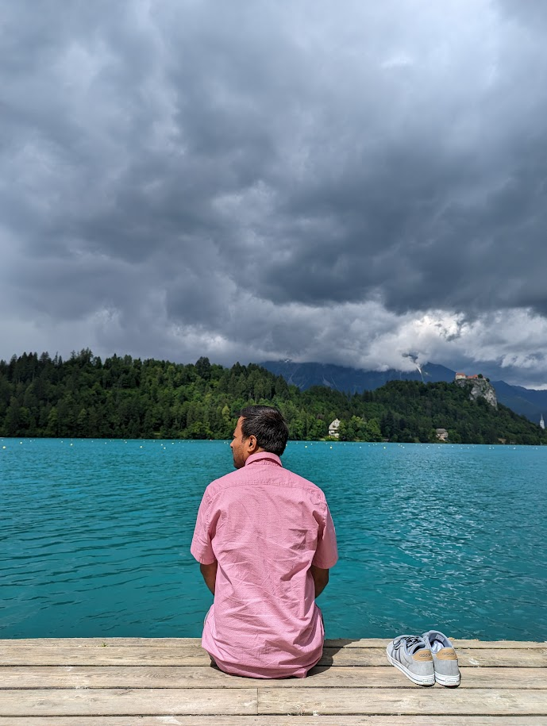

01
⌁
Explainable AI for leakage assessment
Developing interpretable, data-driven methods to understand how leakage signals emerge and how they should be assessed in practice.
Under Elisabeth Oswald, I recently completed my doctoral thesis titled "Towards the Advancement of Side-Channel Security Evaluation through Statistical and Machine Learning Methods" at the University of Klagenfurt, Austria, and I plan to defend it by January 2027. Currently, I am working on an interdisciplinary project exploring "explainability" in side-channel leakage assessment. I hold Bachelor's and Master's degrees in Statistics from Presidency University, Kolkata, and the University of Calcutta, so anything related to applied machine learning methods in security research interests me.

My recent work focuses on statistical and machine-learning methods for profiled and non-profiled side-channel security evaluation, including leakage detection, leakage certification, efficient leakage exploitation, and explainable security assessment.
Developing interpretable, data-driven methods to understand how leakage signals emerge and how they should be assessed in practice.
Studying practical attacks that recover sensitive information with fewer traces and improved statistical efficiency.
Applied multivariate and univariate statistical tests to detect hidden leakage in embedded cryptographic implementations.
Studied mutual-information-based certification methods and rigorous statistical evidence for security claims.
Prevalence of metabolic syndrome in women with polycystic ovary syndrome and the factors associated. Diabetes & Metabolic Syndrome: Clinical Research & Reviews, 2020. Paper ↗
Incidence and Risk Factors of Excess Gestational Weight Gain in Indian Women. The Indian Journal of Nutrition and Dietetics, 2019. Paper ↗
Modelling and simulating football results for prediction of a soccer tournament The Indian Journal of Nutrition and Dietetics, 2019. Poster ↗
I believe research should be reproducible. Here are some of the repositories behind my work.
Non-specific multivariate and univariate leakage detection tests implemented across simulated and practical case studies.
Implementations of different mutual-information estimators considered in side-channel leakage certification.
Anomaly-based intrusion detection using machine-learning and deep-learning binary classification techniques.
University of Klagenfurt · Austria
Statistical and machine-learning methods for profiled and non-profiled side-channel security evaluation.University of Klagenfurt · Austria
Courses: Introduction to Cybersecurity and Advanced Topics in Cybersecurity 1 & 2.Fernandez Hospital Foundation, Indian Statistical Institute, St. Johns Research Institute · India
Clinical statistics, biostatistics and machine-learning research.I am interested in research collaborations, security evaluation, statistical methodology, and opportunities at the intersection of security and machine learning.
aakash.chowdhury@aau.at